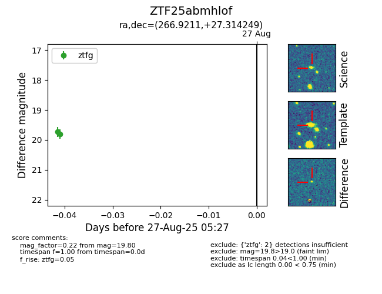

Target ZTF25abmhlof at 2025-08-27 05:37, see:
FINK: fink-portal.org/ZTF25abmhlof
Lasair: lasair-ztf.lsst.ac.uk/objects/ZTF25abmhlof
ALeRCE: alerce.online/object/ZTF25abmhlof
alt names
ZTF25abmhlof (ztf,fink)
coordinates:
equatorial (ra, dec) = (266.9211,+27.31425)
galactic (l, b) = (52.1092,+25.23820)
photometry
last atlaso=20.06, ztfg=19.80
1 atlaso, 2 ztfg detections
